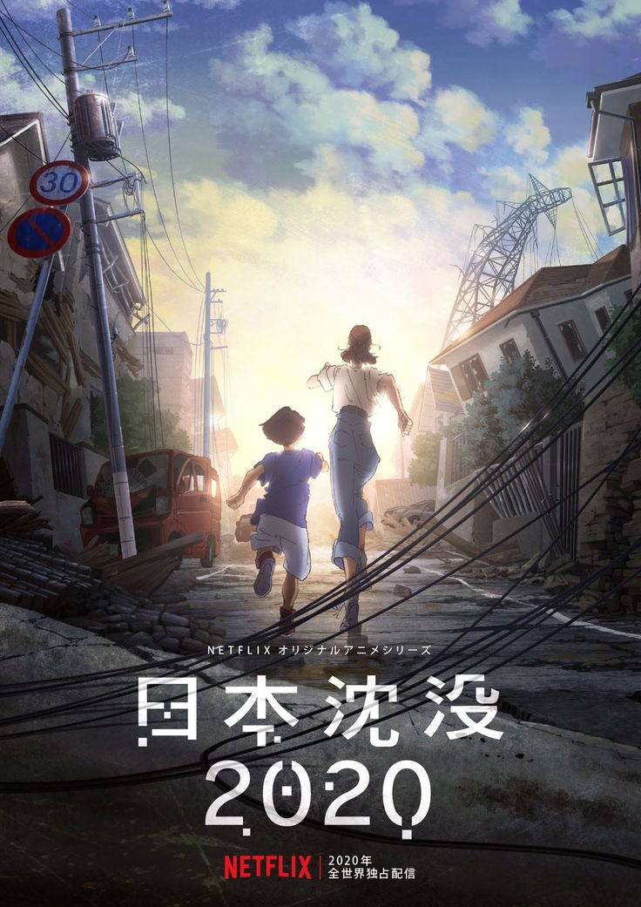
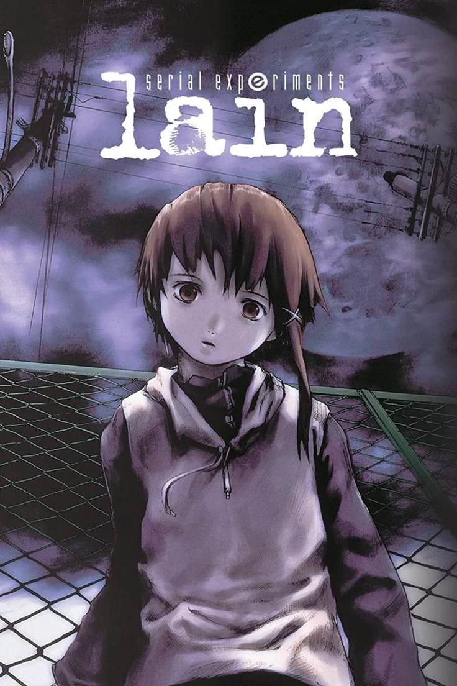
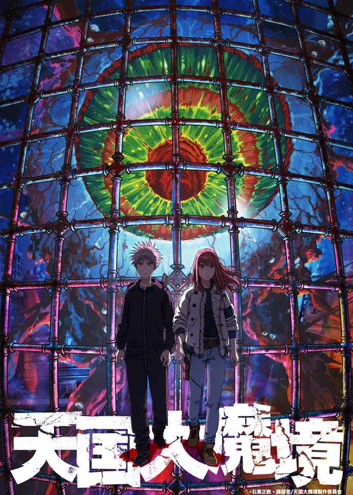

Wybór najlepszych serii/filmów anime
Najlepsze serie/filmy anime
Na tej stronie umieściłam po 5 ulubionych tytułów anime w dwóch kategoriach - psychologicznego horroru oraz postapokaliptycznego/ apokaliptycznego dramatu i survivalu.


